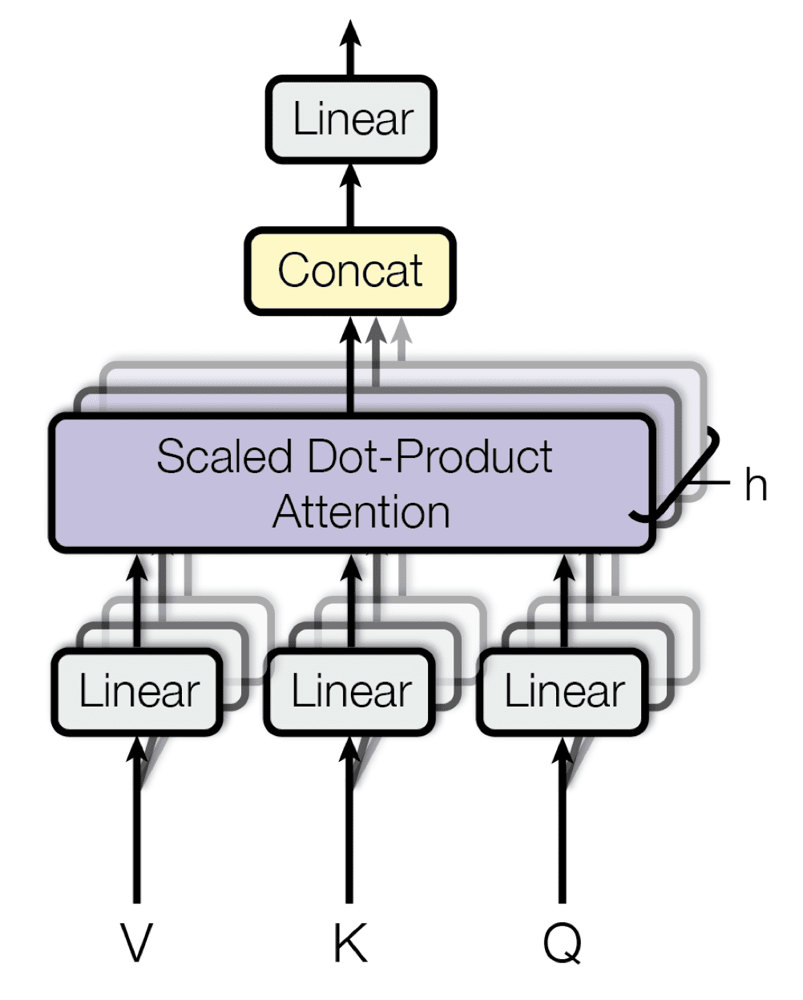

Implementing Multihead attention from scratch with pytorch
In our previous article, we built Self-Attention from scratch using PyTorch. If you haven’t checked that out yet, I highly recommend giving it a read before reading this one!
Now, let’s take things a step further and implement Multi-Head Attention from scratch. This post focuses more on the implementation rather than the theory, so I assume you’re already familiar with how self-attention works.
Let’s get started!
Multihead Attention

Similar to Self-Attention, Multi-Head Attention also creates a new context vector. But instead of using a single attention mechanism, it uses multiple heads, each learning different relationships between words.
For example, consider these two sentences:
1️⃣ I went to the bank to withdraw cash.
2️⃣ I went for a picnic by the river bank.
Here, the word “bank” has different meanings depending on the context. The idea behind Multi-Head Attention is that different heads can focus on different aspects of a word’s meaning, capturing various relationships more effectively.
In the above example with a single attention head, the model might have difficulty capturing both the financial and geographical meanings of the word “bank” at the same time. Multi-Head Attention, on the other hand, allows the model to learn both meanings separately—one head could focus on financial context while another focuses on the geographical context. This way, the model learns richer, more nuanced embeddings of the word “bank” based on different contexts.
For a more intuitive explanation of Multi-Head Attention, I highly recommend checking out this medium post.
Now Lets Implement it.
import torch
torch.manual_seed(42) # Set seed for reproducibility
embedding_dim = 8
words = ['the', 'cat', 'sat', 'on', 'mat']
embeddings = [torch.rand(embedding_dim) for word in words]
embeddings = torch.stack(embeddings)
Similar to our previous Self-Attention implementation, we’ll use the following sentence with a random embedding of dimension 8. However, in real-world applications, embeddings are typically a combination of word embeddings and positional encodings. To keep things simple, we won’t dive into that here. Now, let’s define the Wq, Wk, and Wv matrices. We could use separate smaller weight matrices to get the Query, Key, and Value vectors directly, but a more efficient approach is to use a single large weight matrix and split it afterward for multiple attention heads. This method is more computationally efficient, as it allows for parallel processing across heads.
Wq = torch.rand(embedding_dim, embedding_dim) # (8, 8)
Wk = torch.rand(embedding_dim, embedding_dim) # (8, 8)
Wv = torch.rand(embedding_dim, embedding_dim) # (8, 8)
Lets apply the projection to Get Query Key and Value matrix.
# Apply projection
Q = embeddings @ Wq # Shape: (5, 8)
K = embeddings @ Wk # Shape: (5, 8)
V = embeddings @ Wv # Shape: (5, 8)
Now ,We’ll split the projected vectors into multiple heads . Remember the Embedding dimension must be exactly divisible by head
d_k = embedding_dim // num_heads
Now we obtain the Query Key and Value Matrix for multiple heads.
Q = Q.view(seq_len, num_heads, d_k).transpose(0, 1)
K = K.view(seq_len, num_heads, d_k).transpose(0, 1)
V = V.view(seq_len, num_heads, d_k).transpose(0, 1)
The output shape of Q, K, and V after the split will be (2, 5, 4), where:
- 2 corresponds to the number of heads,
- 5 corresponds to the sequence length (number of words), and
- 4 is the new dimension of each vector for each head.
We calculate attention matrix by,
attention_scores=Q @ K.transpose(-2,-1)
'''For 3D matrix multiplication, the first dimension of both matrices should match,
#while the second dimension of the first matrix must align with the third dimension of
the second matrix according to the matrix multiplication rule'''

Here, we get two attention scores from each head. We’ll proceed with scaling these scores and applying the softmax activation, just like in Self-Attention. For a detailed explanation of this process, please refer to my previous post on Self-Attention
But before applying the scaling and softmax activation, we’ll mask the attention scores. Masking is necessary to ensure that the prediction for a given token only depends on the current and previous tokens. Without masking, the model could “cheat” by looking ahead at future tokens which in not desirable.
Masked Multi-Head Attention

In the decoder of a transformer, we use masked multi-head attention to prevent the model from looking at future tokens when predicting the next one. This ensures that the model can only base its prediction on past tokens, not the future ones. In contrast, the encoder doesn’t need masking because it has access to the entire sequence at once, so it can freely attend to all parts of the input.
This masking enables the model to process all tokens in parallel during training, enhancing efficiency.
We will implement Masked Multi-Head Attention, ensuring that the model only attends to past words by masking the attention scores. This prevents the decoder from seeing future words, enforcing an autoregressive learning process
Masking is applied before softmax by setting forbidden positions to−∞ to ensure they receive zero probability after normalization.
mask = torch.triu(torch.ones(seq_len, seq_len), diagonal=1)
mask = mask.bool()
mask=mask.unsqueeze(0)
attention_scores=attention_scores.masked_fill(mask,-1e11)
attention_scores=attention_scores/math.sqrt(d_k)
#This is mask i.e Upper triangular matrix
tensor([[0., 1., 1., 1., 1.],
[0., 0., 1., 1., 1.],
[0., 0., 0., 1., 1.],
[0., 0., 0., 0., 1.],
[0., 0., 0., 0., 0.]])
#Attention Scores before masking
tensor([[[24.6185, 22.6470, 19.6726, 10.3703, 23.2266],
[25.3424, 23.5643, 20.2438, 10.8568, 24.0848],
[20.2856, 18.6674, 16.2010, 8.5272, 19.1661],
[11.0366, 10.1522, 8.8451, 4.5771, 10.3952],
[23.4003, 21.7570, 18.6598, 10.0209, 22.2936]],
[[24.1949, 25.1107, 20.5201, 12.3558, 24.2538],
[24.3185, 25.1608, 20.5903, 12.5245, 24.4242],
[19.3101, 20.0426, 16.3541, 9.9390, 19.3887],
[11.4448, 11.6265, 9.6817, 5.8675, 11.3187],
[23.9947, 24.8808, 20.3205, 12.3524, 24.1055]]])
#Attention Scores after masking
tensor([[[ 2.4619e+01, -1.0000e+11, -1.0000e+11, -1.0000e+11, -1.0000e+11],
[ 2.5342e+01, 2.3564e+01, -1.0000e+11, -1.0000e+11, -1.0000e+11],
[ 2.0286e+01, 1.8667e+01, 1.6201e+01, -1.0000e+11, -1.0000e+11],
[ 1.1037e+01, 1.0152e+01, 8.8451e+00, 4.5771e+00, -1.0000e+11],
[ 2.3400e+01, 2.1757e+01, 1.8660e+01, 1.0021e+01, 2.2294e+01]],
[[ 2.4195e+01, -1.0000e+11, -1.0000e+11, -1.0000e+11, -1.0000e+11],
[ 2.4318e+01, 2.5161e+01, -1.0000e+11, -1.0000e+11, -1.0000e+11],
[ 1.9310e+01, 2.0043e+01, 1.6354e+01, -1.0000e+11, -1.0000e+11],
[ 1.1445e+01, 1.1626e+01, 9.6817e+00, 5.8675e+00, -1.0000e+11],
[ 2.3995e+01, 2.4881e+01, 2.0321e+01, 1.2352e+01, 2.4105e+01]]])
So what we did here was created a lower triangular matrix and applied it as a mask to attention score and scaled it and passed to softmax to ensure each token can only attend to itself and previous tokens.

After softmax, the row sum will be one and this ensures the attention weights are a valid probability distribution, allowing the model to learn proportional contributions from past tokens.
tensor([[[1.0000, 0.0000, 0.0000, 0.0000, 0.0000],
[0.5130, 0.4870, 0.0000, 0.0000, 0.0000],
[0.3420, 0.3315, 0.3265, 0.0000, 0.0000],
[0.2540, 0.2510, 0.2486, 0.2465, 0.0000],
[0.2029, 0.2000, 0.1984, 0.1980, 0.2007]],
[[1.0000, 0.0000, 0.0000, 0.0000, 0.0000],
[0.4935, 0.5065, 0.0000, 0.0000, 0.0000],
[0.3342, 0.3391, 0.3267, 0.0000, 0.0000],
[0.2521, 0.2528, 0.2485, 0.2466, 0.0000],
[0.2006, 0.2022, 0.1984, 0.1981, 0.2007]]])
Here is what out attention scores looks like.
Now we multiply out Attention score with Value matrix and concatenate it,
output=attention_scores@V
output.transpose(0,1).reshape(seq_len,embedding_dim)

After Concatenation we achieve the final Contextual embedding of each vectors.

Here’s a cleaner and more efficient implementation of the Multi-Head Attention module in PyTorch, wrapped in a class:
import torch
import math
class MultiHeadAttention(torch.nn.Module):
def __init__(self, num_heads, embedding_dim):
super(MultiHeadAttention, self).__init__()
self.num_heads = num_heads
self.embedding_dim = embedding_dim
self.d_k = embedding_dim // num_heads
self.Wq = torch.nn.Parameter(torch.rand(embedding_dim, embedding_dim))
self.Wk = torch.nn.Parameter(torch.rand(embedding_dim, embedding_dim))
self.Wv = torch.nn.Parameter(torch.rand(embedding_dim, embedding_dim))
def forward(self, embeddings):
seq_len = embeddings.size(0)
Q = embeddings @ self.Wq # (seq_len, embedding_dim)
K = embeddings @ self.Wk
V = embeddings @ self.Wv
# Converting to multiheaded attention
Q = Q.view(seq_len, self.num_heads, self.d_k).transpose(0, 1) # (num_heads, seq_len, d_k)
K = K.view(seq_len, self.num_heads, self.d_k).transpose(0, 1)
V = V.view(seq_len, self.num_heads, self.d_k).transpose(0, 1)
# Compute attention scores
attention_scores = torch.matmul(Q, K.transpose(-2, -1)) # (num_heads, seq_len, seq_len)
# Apply mask (upper triangular mask for causal attention)
mask = torch.triu(torch.ones(seq_len, seq_len), diagonal=1).bool()
mask = mask.unsqueeze(0).expand_as(attention_scores)
attention_scores = attention_scores.masked_fill(mask, -1e11)
# Scale the attention scores
attention_scores = attention_scores / math.sqrt(self.d_k)
# Apply softmax to get attention weights
attention_weights = torch.softmax(attention_scores, dim=-1) # (num_heads, seq_len, seq_len)
# Compute the output (weighted sum of values)
output = torch.matmul(attention_weights, V)
output = output.transpose(0, 1).contiguous().view(seq_len, self.embedding_dim)
return output
# Example usage
torch.manual_seed(42)
embedding_dim = 8
num_heads = 2
words = ['the', 'cat', 'sat', 'on', 'mat']
embeddings = [torch.rand(embedding_dim) for word in words]
embeddings = torch.stack(embeddings)
mha = MultiHeadAttention(num_heads=num_heads, embedding_dim=embedding_dim)
# Forward pass through the model
output = mha(embeddings)
print("Output shape:", output.shape)